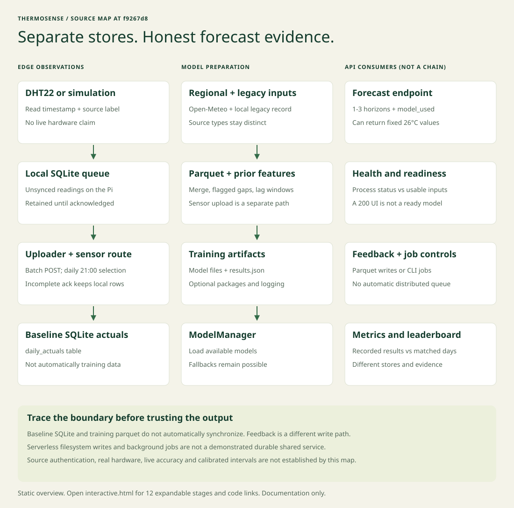

THERMOSENSE / ARCHITECTURE FIELD GUIDE
One station.
Several distinct data paths.
Trace observations, training artifacts and forecast evidence without mistaking a running dashboard for a verified prediction.
Source map at f9267d8, 17 October 2026. Documentation only; no product behavior changes.
Pi SQLite, baseline SQLite and training parquet are separate stores. Uploading a sensor batch does not automatically retrain a model or update training data. Placeholder values remain possible on the forecast route.

The overview is supplemental and scrolls on narrow screens. Open each stage below for the full source-linked explanation.
Observe and retain
01Read at the edgeOptional Raspberry Pi + DHT22
The sensor daemon reads temperature and humidity, writes local SQLite rows and exposes an HTTP interface for unsynced readings. Without the sensor library it can simulate readings; a running daemon is not proof of real hardware observations.
Check the source label and hardware mode before treating a reading as ground truth. No hardware availability is verified by this guide.
hardware/sensor_daemon.pyhardware/README.md02Upload, then acknowledgeLocal queue is not the cloud store
The uploader fetches pending rows and posts a batch to /api/sensor/readings. It marks local IDs synced only when aggregate accepted equals the entire batch and rejected is zero. An incomplete acknowledgement retains all rows for retry.
A successful HTTP response is not enough. Cloud daily selection can accept fewer rows than a raw batch contains, so retries may persist.
hardware/uploader.pytests/test_uploader_acknowledgement.py03Select daily actuals20:00 through 22:59 in the parsed timestamp
The sensor route chooses the reading closest to 21:00 for each date in a request and stores it in the baseline SQLite daily_actuals table. It uses the timestamp's parsed hour; it does not normalize all timestamps to the configured location timezone.
This path does not automatically update training parquet. It is separate from forecast feedback and preprocessing.
Prepare and learn
04Fetch regional dataHistorical backfill and daily updates
The CLI pulls Open-Meteo history and forecasts. Backfill merges API history with the legacy observation CSV; overlapping legacy sensor temperatures take precedence. Gaps are forward-filled and flagged. Daily mode appends historical rows and refreshes forecast_7day.parquet.
API-derived or gap-filled temperature is not a new local sensor observation. The daemon upload is not automatically joined into this preprocessing path.
05Build features without looking aheadLags, prior windows and calendar
Feature engineering builds temperature lags, shifted rolling windows and cyclic calendar signals. API bias features are conditional on an available reference temperature column. Model training splits chronologically.
A feature name alone does not prove its input exists. Inspect the actual columns, time split and missing-data flags before claiming local-bias learning.
06Train and save artifactsOptional ML packages and model files
The training CLI prepares data, fits selected SARIMA, LightGBM, optional TFT and ensemble paths, and writes model artifacts plus results.json. MLflow logging is a separate optional integration. The loader imports available models and checks their files.
An architecture diagram cannot prove held-out accuracy. Missing native libraries or artifacts can leave a model unavailable without stopping the API.
Serve and inspect
07Serve a forecast, inspect its sourceFastAPI + ModelManager
The API asks ModelManager for one to three horizons. The loader prefers available model paths and falls back when prediction fails. Without trained models or usable data its placeholder path can reuse the last temperature, or 26°C when loading fails. If the manager is absent, the route itself also pads fixed 26°C points.
A 200 response is not proof of model-backed inference. model_used can say climatology, fallback or placeholder. Fixed interval widths are not demonstrated calibration.
08Separate health from readinessLive process is not a ready forecast
/api/health confirms the process responds. /api/ready checks named location config, a loaded model and feature-ready data; it returns 503 if checks fail. The React dashboard calls the API and displays its responses; loading the UI does not train a model.
Readiness is a probe, not a guarantee that every future request or model call succeeds. Check both status and returned source.
09Record feedback to training dataA different write path
Forecast feedback validates the observation date and writes to daily_merged.parquet, updating api_bias when a reference is available. Failed persistence returns 503 rather than claiming the observation was recorded.
Feedback storage is not the sensor route's baseline SQLite table, and recording feedback does not automatically retrain models.
src/api/routes/forecast.pytests/test_feedback_persistence.pyEvaluate and operate
10Compare issued forecasts with actualsBaseline SQLite + separate training scores
The collector records forecasts from configured providers, then joins their dates with daily_actuals for the leaderboard. A source needs at least three matched days. The metrics API separately reads recorded model evaluation results, not a fresh live evaluation on each request.
Keep sample counts and forecast horizons aligned. Stored scores, demo results and a rendered chart do not prove current deployment accuracy.
11Run bounded local jobsPer-process claims and subprocesses
Pipeline endpoints start background threads that run local CLI scripts. A lock atomically claims a job and duplicate running claims receive 409. Job status and the bounded log buffer are process-local.
These are not a durable distributed job queue. A restart loses in-memory status; serverless hosts may not keep background workers alive. No deployment lifetime is verified here.
src/api/routes/pipeline.pytests/test_pipeline_jobs.py12Know the deployment boundaryVercel entrypoint or a long-running server
main.py re-exports the FastAPI app. The API can serve a built React SPA; Vercel build preparation arranges its assets. Model files, parquet and SQLite are local filesystem artifacts, not a shared managed database.
Do not assume local writes are durable across serverless instances. The sensor and pipeline control endpoints have no authentication dependency in this snapshot; an uploader API-key header alone does not secure them.
When the outputs disagree
Start with the source label, timestamp and store. Then check feature readiness, loaded artifacts and model_used. Compare an issued forecast with matched actuals at the same horizon, rather than comparing a placeholder with historical training scores.
The source diagram is a navigation aid, not proof of accuracy, secure access, durable storage or a live sensor. It does not resolve the pending choices around authentication and removing placeholder responses.